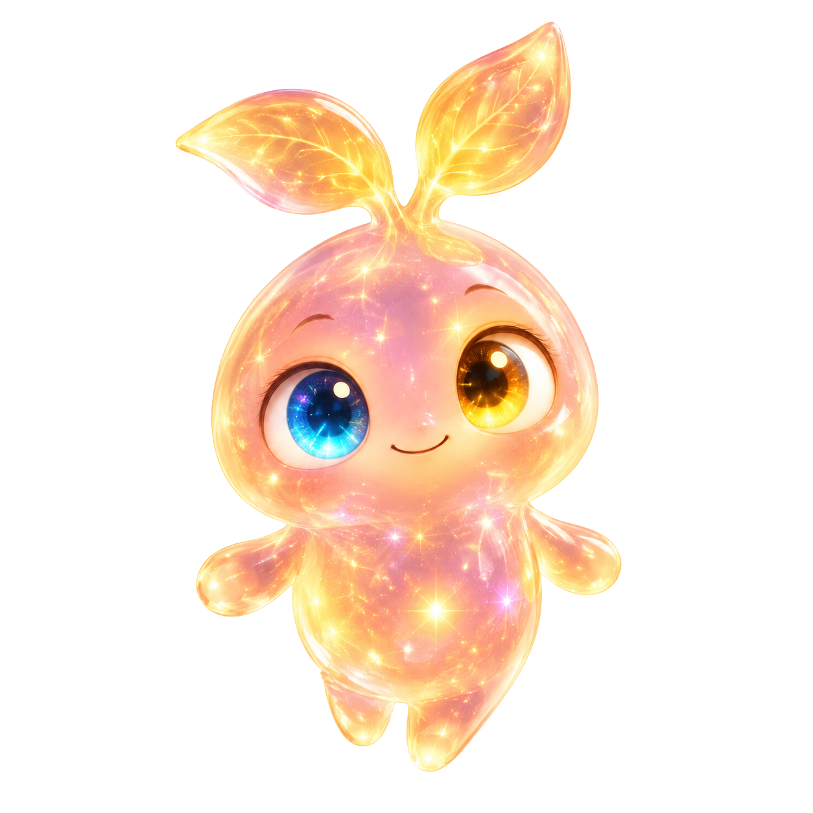

یک پیام از مدار زمین
ایستگاه به تو نیاز دارد!
چراغها خاموش شدهاند، ارتباط قطع است… و قهرمان این سفر هنوز نامی ندارد.
در حال بررسی اتصال…
ورود به کارگاه
محیط آزمایش محلی است. این حسابها دادهٔ واقعی ندارند.
معلم با حساب تأییدشدهٔ خود وارد میشود. دسترسی پنل معلم باید از قبل برای همان حساب فعال باشد.
ورود با پیوند ایمیلی
کدام قهرمان بازی میکند؟
پروندهٔ خودت را انتخاب کن؛ نامهای یکسان میتوانند برای دو کودک متفاوت باشند.
کلاسهای من
کلاس من
دعوت دانشآموز
پس از ساخت یا بازکردن کلاس، دعوت یکروزه صادر کنید.
اعضا و گزارش فعالیت
فعالیتهای اخیر
تابلوی نتایج کلاس
با روشنکردن تابلو، نام و بهترین امتیاز مأموریت هر عضو فعال برای اعضای همین کلاس نمایش داده میشود؛ تمرین شخصی وارد تابلو نمیشود.
به مدار خودت برگشتی
کلاسهای من
تمرین من
قانون این نوبت چیست؟
گنجینهٔ من
این نشانها از فعالیتهای تأییدشدهٔ تو به دست آمدهاند.
رکوردهای مأموریت
فعالیتهای اخیر
دفتر بازسازی تو
ایستگاه چطور پیش میرود؟
مسیر امروز تو

من همراهتم؛ بیا اولین قدم را برداریم!
هر قاب یک گروه است؛ ستارههای گروهها را با هم بشمار.
یک سفر دیگر در داستان تو
تابلوی نتایج کلاس
بهترین نتیجهٔ مأموریتهای پایانیافته، برای هر مسیر جداگانه. امتیاز برابر، رتبهٔ برابر دارد.
پیشنمایش هنوز به سرور متصل نیست
برای آزمایش روی همین رایانه، در پوشهٔ پروژه دستورهای زیر را اجرا کنید و نشانی محلی را باز کنید:
npm ci --ignore-scripts npm run dev:v9بازکردن نسخهٔ محلی
اتصال عمومی پس از آمادهسازی سرور و ورود امن فعال میشود.